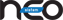

Yatırım Portföyü
| Şirket | Sektör | Açıklama | Satın Alma Tarihi | Hisse |
| Şok Marketler Ticaret A.Ş. | Perakende | Şok Marketler Ticaret A.Ş. ülke geneline yayılmış mağazalarıyla organize perakendecilik sektöründe faaliyet göstermekte olup temel ihtiyaç maddelerini müşterilerin rahatlıkla ulaşabileceği lokasyonlarda en uygun fiyata sağlayarak sürdürülebilir büyümeyi hedeflemektedir. | 25.08.2011 | 22,94 |
| Flo Mağazacılık ve Pazarlama A.Ş. | Perakende | Üretim ve perakendecilik tecrübesiyle Türkiye ayakkabı perakende sektörünün lideri FLO, bünyesindeki FLO, Polaris, Kinetix ve Lumberjack gibi markaları ve Türkiye geneline yayılmış FLO, Polaris ve Sport in Street mağazalarıyla ayakkabı ve aksesuar satışı gerçekleştirmektedir. | 12.12.2013 | 11,5 |
| Kümaş Manyezit Sanayi A.Ş. | Endüstriyel Mineraller | Kümaş Manyezit Sanayi A.Ş.; sinter manyezit, sinter dolomit, kalsine manyezit, monolitik ürünler ve refrakter tuğla üreten ve demir-çelik, çimento, cam, kireç, demir dışı metaller ve bazı diğer endüstrilerin ihtiyacını karşılayan Türkiye ve Doğu Avrupa’daki en büyük tedarikçi ve üretici konumundadır. | 03.05.2012 | 51 |
| Makina Takım Endüstrisi A.Ş | Sanayi Gereçleri | Türkiye’nin ilk kesici takım üreticisi olarak 1957 yılında kurulan Makina Takım Endüstrisi A.Ş., delici, vidalı, kesici ve testere ürün gruplarında çok geniş bir yelpazede üretim yapmaktadır. | 01.09.2012 | 79,96 |
| Azmüsebat Çelik San. ve Tic. A.Ş. | Hızlı Tüketim | Azmüsebat Çelik Sanayi ve Ticaret A.Ş., Türkiye'nin kendi alanında en eski ve en bilinen markalarından DERBY marka tıraş malzemelerinin üreticisidir. | 13.05.2013 | 97,61 |
| Penta Teknoloji Ürünleri Dağıtım Ticaret A.Ş. | Toptan Ticaret | 1990 yılında kurulan Penta, 2012 yılında Mersa Sistem ile birleşerek Türkiye’nin 2. Büyük teknoloji tedarikçisi olmuştur. Bugün tüm Türkiye’ye yayılmış 4.300’ün üzerinde bayisi ile 40’ı aşkın küresel markanın Türkiye’deki katma değerli teknoloji dağıtıcısıdır. Dağıtıcısı olduğu başlıca markalar; Adobe, Autodesk, Casio, DellEMC, Exper, HP, Huawei, IBM, Intel, Lenovo, Logitech, MSI, OKI, Viewsonic, Wacom, Xerox, Microsoft XBOX. | 27.03.2014 | 54,30 |
| Türkiye Finans Katılım Bankası A.Ş. | Finansal Hizmetler | Türkiye’deki Katılım Bankalarından birisi olan Türkiye Finans Katılım Bankası A.Ş., özel cari hesap ve katılma hesapları üzerinden fon toplayıp borç vermekle ve faizsiz bankacılık uygulamalarıyla çeşitli finansal ve bankacılık hizmetleri sunmakla yetkilendirilmiştir. | 22.01.2010 | 10,57 |
| Kuveyt Türk Katılım Bankası A.Ş. | Fİnansal Hizmetler | Türkiye’deki Katılım Bankalarından birisi olan Kuveyt Türk, özel cari hesap ve katılma hesapları üzerinden fon toplayıp borç vermekle ve faizsiz bankacılık uygulamalarıyla çeşitli finansal ve bankacılık hizmetleri sunmakla yetkilendirilmiştir. | 20.01.2011 | <1 |
| İsmet Ambalaj Yatırımları A.Ş. | Ambalaj | İsmet Ambalaj’ın başlıca faaliyet konusu kâğıt, karton, metal, cam, akrilik cam, plastik, tekstil, ahşap, hasır v.b. malzemelerin çeşitli bileşimlerinden imal edilen her türlü ambalajı üretmektir. | 04.07.2011 | 100 |

Gözde Girişim Sermayesi Yatırım Ortaklığı A.Ş. © 2020
